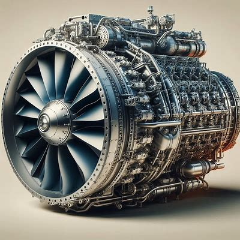

The Kaveri engine,developed b India's Gas Turbine Reasearch Establishment (GTRE) within the defence Research and Development Organisation(DRDO),is undergoing trials at the Gromov Flight Reasearch Institute (GFRI) in Russia, marking a significant advancement in the country's aerospace capabilities. The Defence Research and Development Organisation (DRDO)is conducting detailed trials with approximately 25 hours of testing remaining,while simultaneously preparing for extensive 70-hour flight trials on a Russian Ilyuhin Il-76 test bed aircraft.
